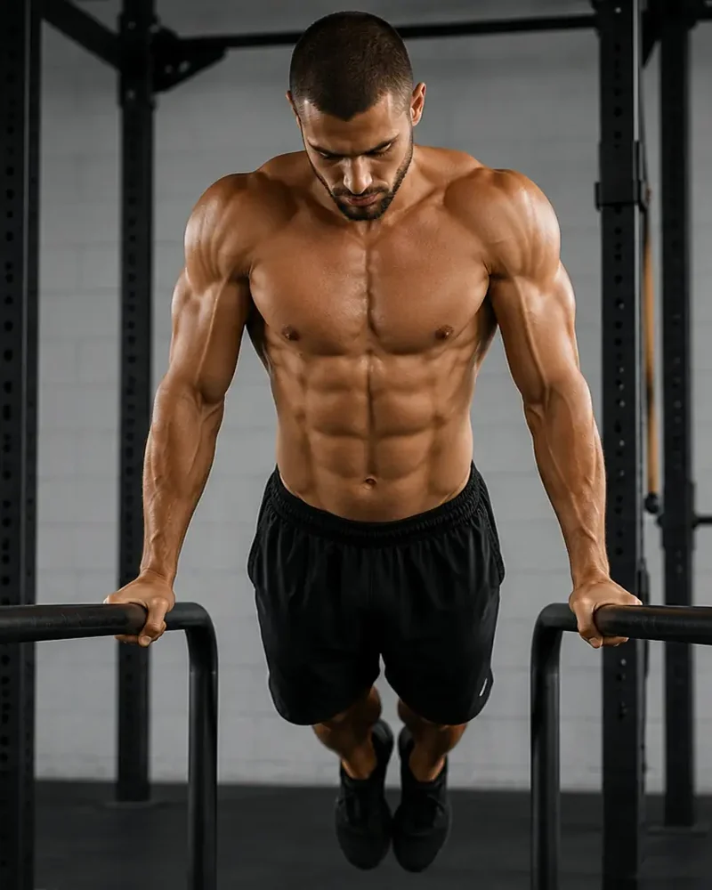

Forza · Controllo · Progressione
Calisthenics.
Impara a controllare il tuo corpo, costruendo forza e mobilità attraverso progressioni adatte al tuo livello.
Il corpo come attrezzo
La forza nasce dal controllo.
Il Calisthenics utilizza il peso del corpo per sviluppare forza, stabilità e coordinazione. Ogni abilità viene costruita attraverso esercizi progressivi, dalle basi alle figure più evolute.
L'obiettivo non è soltanto eseguire un movimento, ma comprenderlo e padroneggiarlo con tecnica, pazienza e continuità.
Un corpo più consapevole
I benefici del Calisthenics.
Forza
Costruisce forza funzionale con il peso corporeo.
Mobilità
Migliora l'ampiezza e la qualità del movimento.
Stabilità
Rafforza core, articolazioni e controllo posturale.
Coordinazione
Integra diverse parti del corpo in un gesto unico.
Costanza
Insegna il valore delle progressioni graduali.
Autonomia
Aumenta la conoscenza del proprio corpo.
Allenati a San Stino
La sede Calisthenics.
San Stino di Livenza
Via Gallo 12, 30029 Corbolone (VE)Apri in Google Maps →Come funziona
Una lezione di Calisthenics.
Nella palestra di San Stino di Livenza, in Via Gallo 12. Per giorni e orari aggiornati scrivici su WhatsApp.
Mobilità e riscaldamento
Spalle, polsi, anche e colonna: sono le zone più sollecitate negli esercizi a corpo libero.
Tecnica di base
Trazioni, piegamenti, dip e squat, curando la posizione prima del numero di ripetizioni.
Progressioni personali
Ognuno lavora sulla versione dell’esercizio adatta al proprio livello, con un obiettivo chiaro per le settimane successive.
Core e defaticamento
Lavoro sul centro del corpo e allungamento per chiudere.
A chi si rivolge
Calisthenics è adatto a te se…
- Ragazzi e adulti che vogliono allenarsi con il proprio peso corporeo.
- Chi parte da zero: la prima trazione si costruisce con le progressioni, non si improvvisa.
- Chi si allena già e vuole migliorare controllo, forza e postura.
- Chi pratica altri sport e cerca una preparazione fisica solida.
Alle nostre lezioni di calisthenics arrivano persone da San Stino di Livenza, La Salute di Livenza, Corbolone, Torre di Mosto, Ceggia e Portogruaro. La prima lezione è gratuita: vieni a vedere com’è prima di decidere.
Prima di iniziare
Domande frequenti.
Devo essere già forte per iniziare?
No. Ogni esercizio ha una progressione più semplice: si comincia da lì e si sale un gradino alla volta.
Che differenza c’è con la palestra tradizionale?
Si usa il proprio corpo invece dei macchinari: si lavora su forza, controllo e mobilità insieme, con esercizi che restano utili anche fuori dalla palestra.
Quante volte a settimana conviene allenarsi?
Due allenamenti a settimana sono un buon punto di partenza per vedere risultati senza sovraccaricare.
Serve attrezzatura mia?
No. Servono solo abbigliamento comodo e scarpe da ginnastica pulite.
Serve il certificato medico?
Sì. Nella pagina Certificato medico trovi il modulo per la visita e come caricare il documento.
Altri percorsi: Kickboxing · Pole dance · Ginnastica artistica
Inizia dalle basi
Vieni a provare Calisthenics.
Scopri il tuo livello e costruisci la prossima progressione.